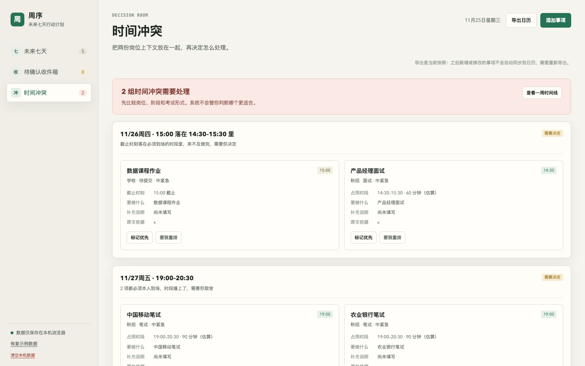
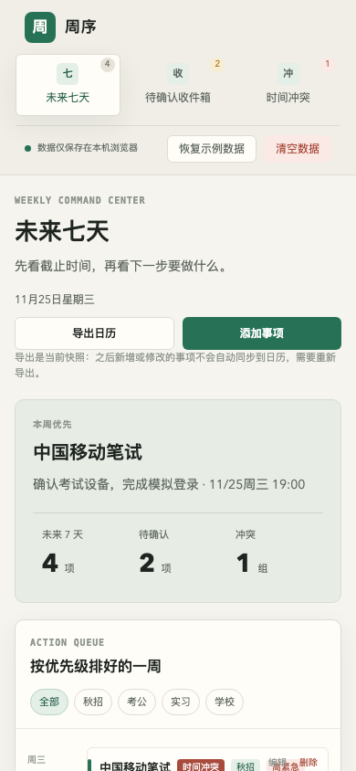
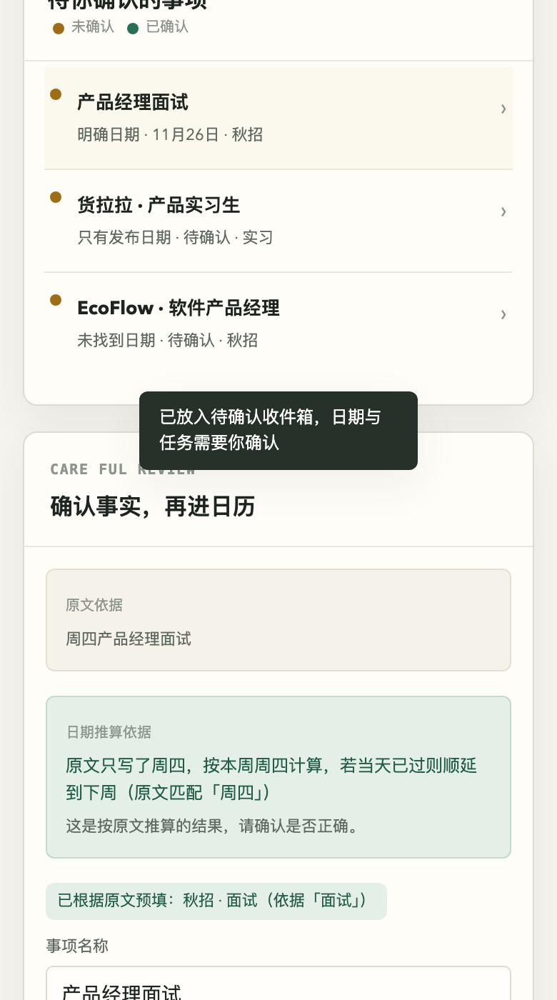

03 / Solution
核心决定：先分清"要人到场"和"要交东西"
第一版我把所有时刻都当成"截止时间"，结果"明天晚上 8 点腾讯会议汇报"被填进了截止时间字段。 根因是我按事项叫什么判断语义。改成按这件事是不是要到场判断之后， 一套模型同时覆盖了笔试、面试、会议和作业交付——没有第二套规则。
要人到场 · 占一段时段
登记开始时刻，可选登记真实结束时刻。冲突时按区间重叠判定。
- 笔试 09:30–11:00（公告写明的真实起止）
- 面试 14:30 开始，未填结束时间则按 60 分钟估算并标注
- 会议 20:00 开始，会议号单独存进补充说明
- 答辩 / 宣讲 / 组会 同一套规则
要交东西 · 只占那一刻
登记截止时刻，前面不铺准备窗口。冲突时按时刻落点判定。
- 网申 提交那一刻
- 课程作业 23:59 截止
- 实习交付 18:00 交付
- 报名截止 同一套规则
原则 01
日期永远人工确认
原文与推算依据并排展示，日期不会静默猜测。 "周四"这类相对表达会写成："原文只写了周四，按本周周四计算"。
原则 02
缺信息就说缺信息
截止日期缺失就标"未找到日期"，发布日不等于截止日， 截图输入直接写"当前未自动识别"，不把示例标签冒充模型结果。
原则 03
本地优先，不上传
数据只存在本机浏览器，可一键清空。 求职场景涉及公司与个人隐私，"数据不出本机"本身就是产品承诺。


